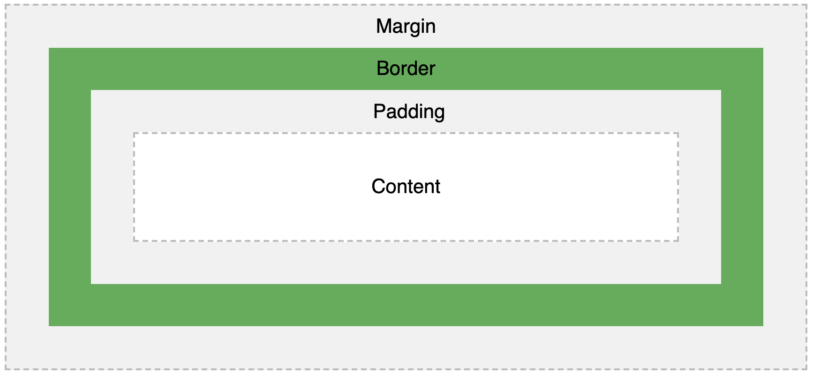
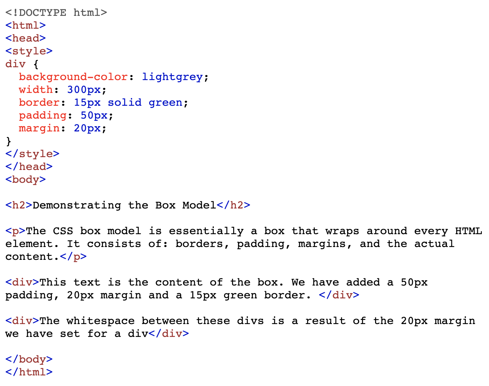
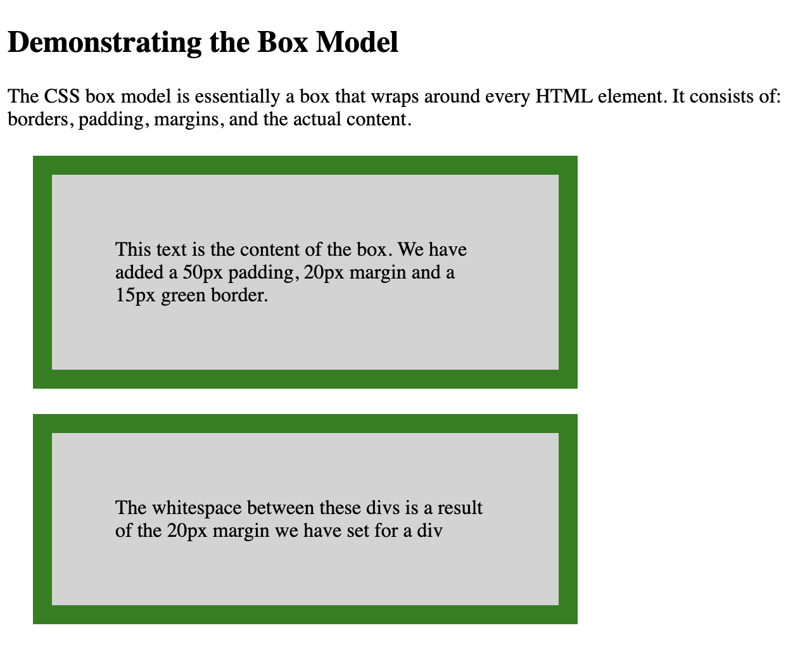
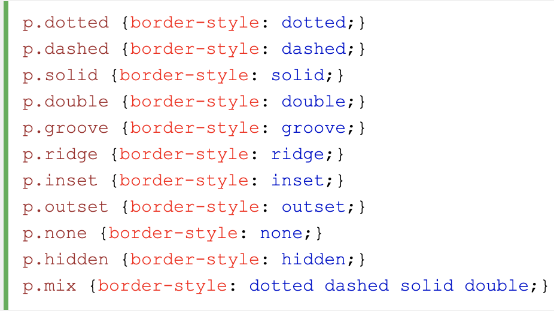

All HTML elements can be considered as boxes. In CSS, the term "box model" is used when talking about design and layout.
The CSS box model is essentially a box that wraps around every HTML element. It consists of: margins, borders, padding, and the actual content. The image below illustrates the box model:
The box model allows us to add a border around elements, and to define space between elements. Here is some HTML and CSS of a an element that we have given a border to, and then set the padding and margin properties.
Here is what it would look like on your web page
Borders can be useful if you want viewers of your webpage to see the different elements on your webpage. This creates a much more distinct look and gets rid of any ambiguity. There are bunch of different ways you can style borders.
The border-style property specifies what kind of border to display.
The border-style property can have from one to four values (for the top border, right border, bottom border, and the left.
Here is what the code looks like for the different border-style properties
Here is what they look like on your webpage

When styling your website it can look a bit strange having all the elements squished up against one another. You may want to make use of ‘margin’ to space out your elements on the page. CSS has properties for specifying the margin for each side of an element:
All the margin properties can have the following values:
Padding can be set on any CSS element to help create space between the content and the border. It’s another way to space out elements on your page and can be particularly useful when you have hidden borders but want space around one elements content, and another element.
CSS has properties for specifying the padding for each side of an element:
All the padding properties can have the following values:
To shorten the code, it is possible to specify all the padding properties in one property. The padding property is a shorthand property for the following individual padding properties:
So, here is how it works: If the padding property has four values:
Headover to codeply.com and try playing around with these properties yourself!
All information and images sourced from W3 schools.com